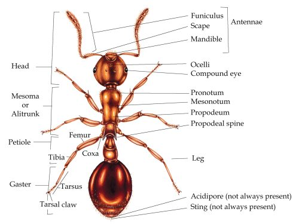
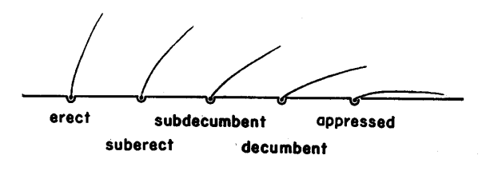
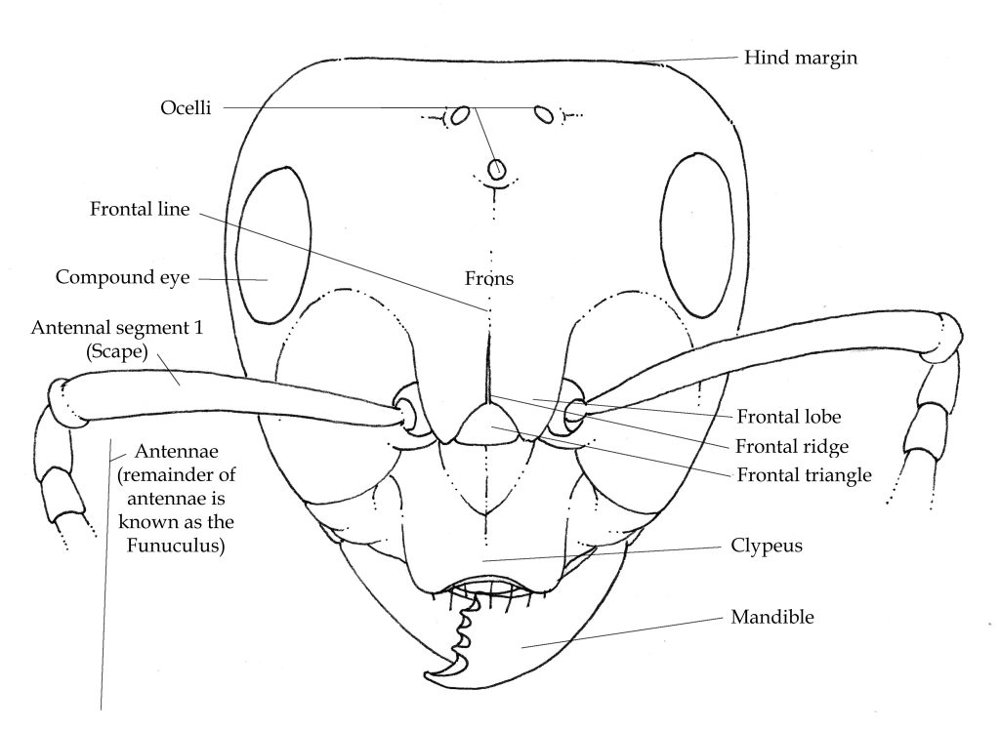
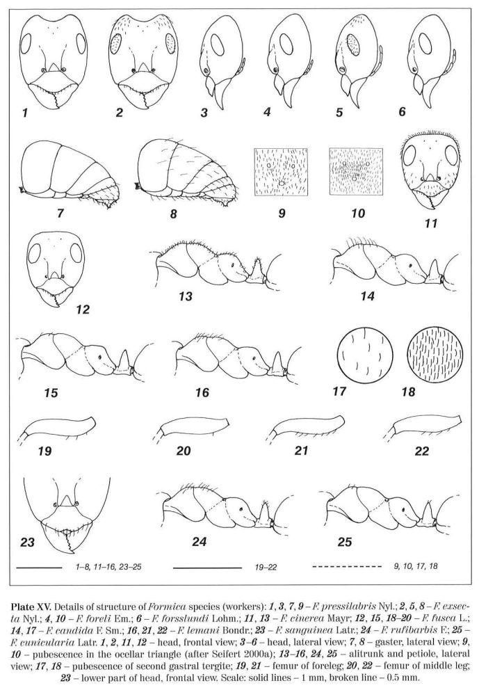
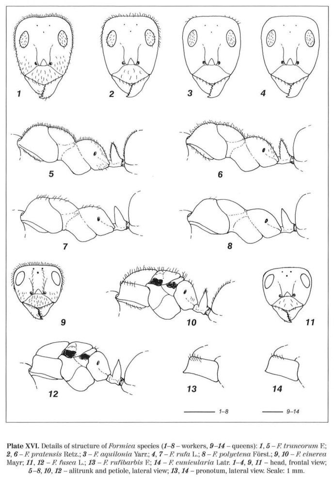

| Keywords: | |
|---|---|
| alitrunk |

Ant anatomy for beginners, Lizzie Harper
|
| clypeal | 
Morphological Terms/Worker Head, via AntWiki
Mentioned in: 9
|
| concave | Concave is defined as a shape that curves inward, like the inside of a bowl or a sphere.
Mentioned in: 1
|
| convex | convex is an adjective describing a surface or shape that curves or bulges outward.
|
| dorsum | Referring to the dorsum or upper surface; opposite is ventral.
Morphological Terms, via AntWiki
|
| erect |

Wilson, E. O. 1955. A monographic revision of the ant genus Lasius. Bulletin of the Museum of Comparative Zoology.
|
| frontal triangle |

Ant anatomy for beginners, Lizzie Harper
Mentioned in: 10
|
| gaster | Ant anatomy for beginners, Lizzie Harper
Mentioned in: 5
|
| head | Ant anatomy for beginners, Lizzie Harper
|
| Plate XV |

Wojciech Czechowski, Alexander Radchenko, Wiesława Czechowska. 2002. The ants (Hymenoptera, Formicidae) of Poland
|
| Plate XVI |

Wojciech Czechowski, Alexander Radchenko, Wiesława Czechowska. 2002. The ants (Hymenoptera, Formicidae) of Poland
|
| suberect | |
{kind=link}
{kind=link}
{kind=link}
{kind=link}
{kind=link}